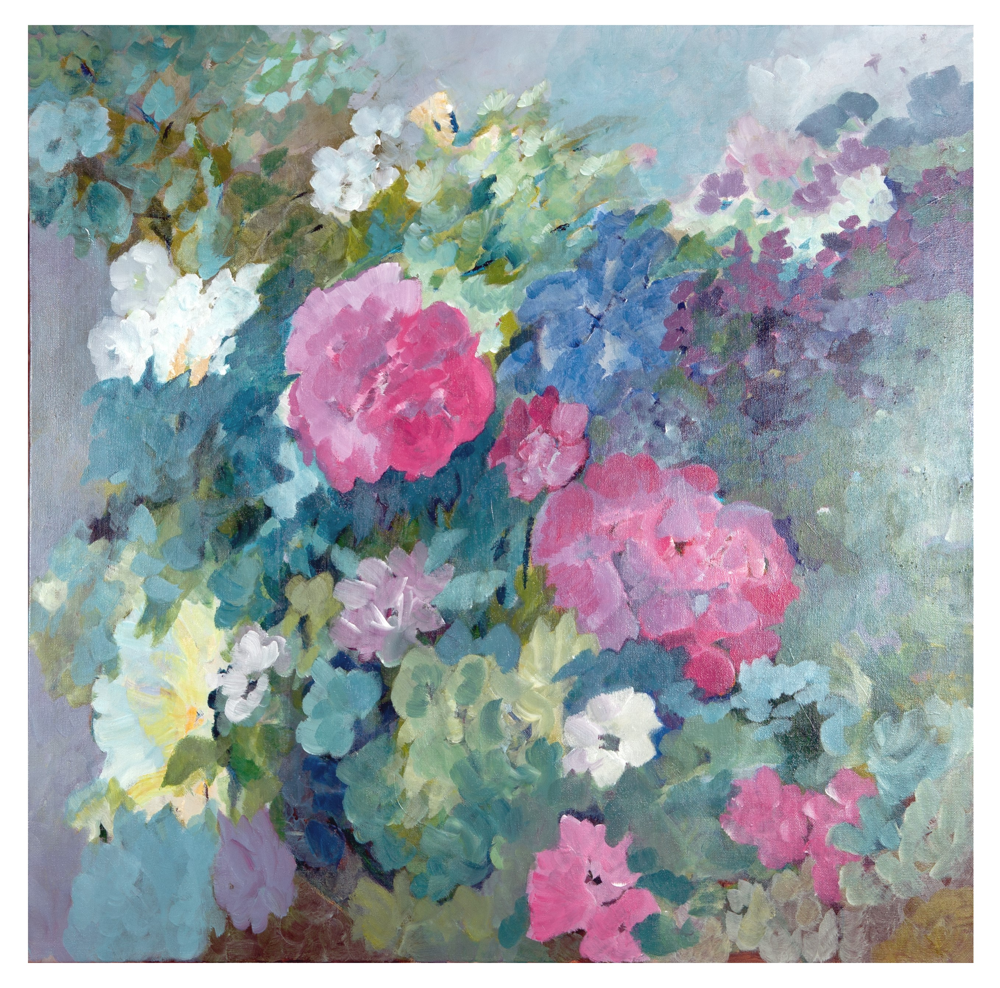
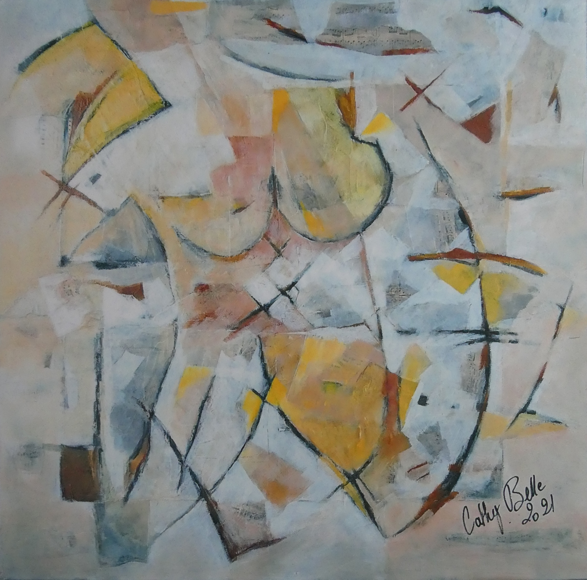

Painting & texture
Between abstraction
and memories of flowers.
A dialogue between colour, texture and the living world.
Explore the paintings
Selected paintings
A selection of paintings01 / About
Drawing,
a constant thread.

I studied at the École des Beaux-Arts de Tours and qualified as an architectural assistant in 1977. Drawing has always played an important part in my life.
After learning to work with ink, gouache, watercolour, pastels, oils and acrylics, I began exploring texture through crumpled paper, woven raffia and collage.
I painted abstract work for many years. More recently, I have returned to a style that hints at recognisable forms.
One summer, I turned to floral painting. As I became more aware of the resilience of the natural world around me, painting became a way to remember flowers.
Today I bring my recent figurative work together with my earlier explorations in abstraction.
“Imagination, memory, thought
and dreams made into paintings.”Cathy Belle
02 / Studio · Saché
Create.
Share.
Teach.
The pleasure of making,
the freedom to explore materials.
Painting is also a way to connect with others.
Exhibiting my work and sharing my techniques are an important part of my practice.
I design and lead drawing and painting workshops to share the pleasure of making and discovering.
03 / Contact
A painting,
a connection.
Has a painting caught your eye?
Have a question about my work or workshops?
Cathy Belle
29 route de la Basse Chevrière
37190 Saché, France